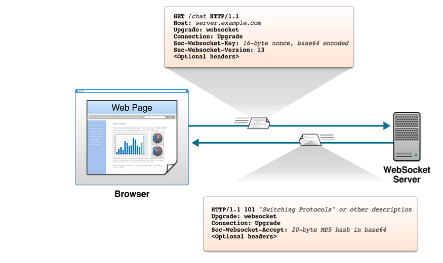
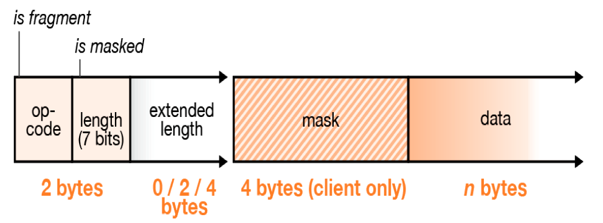
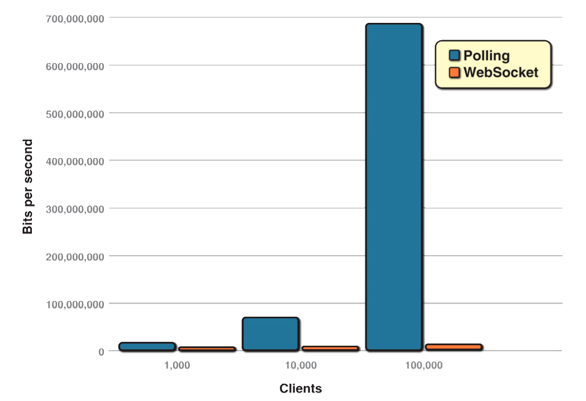
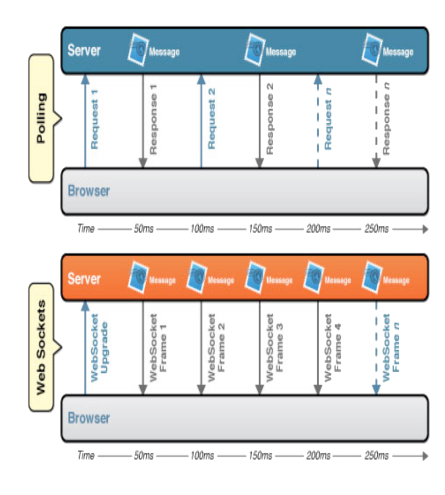
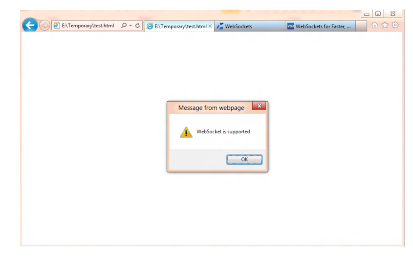
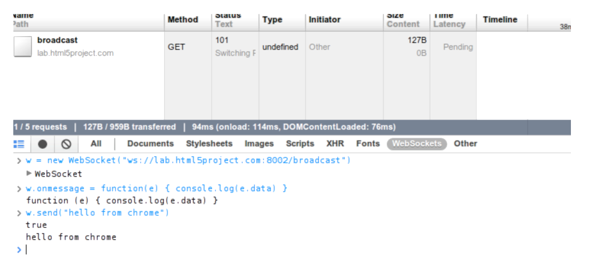
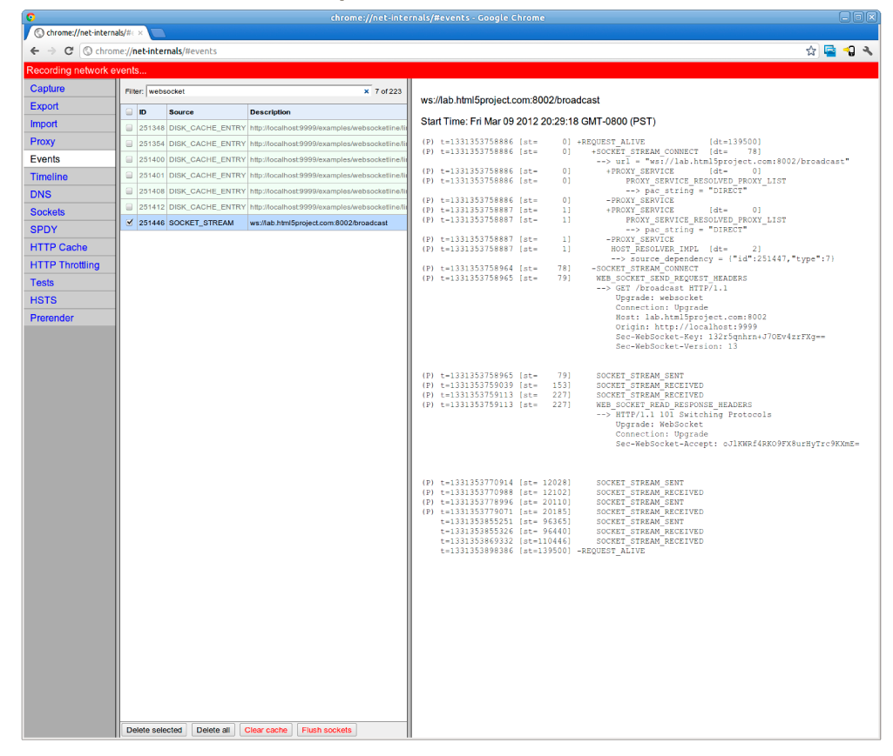
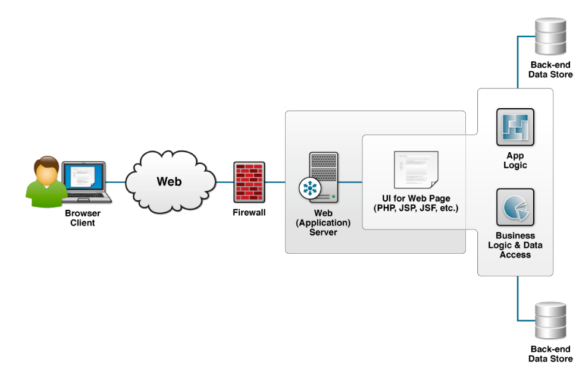
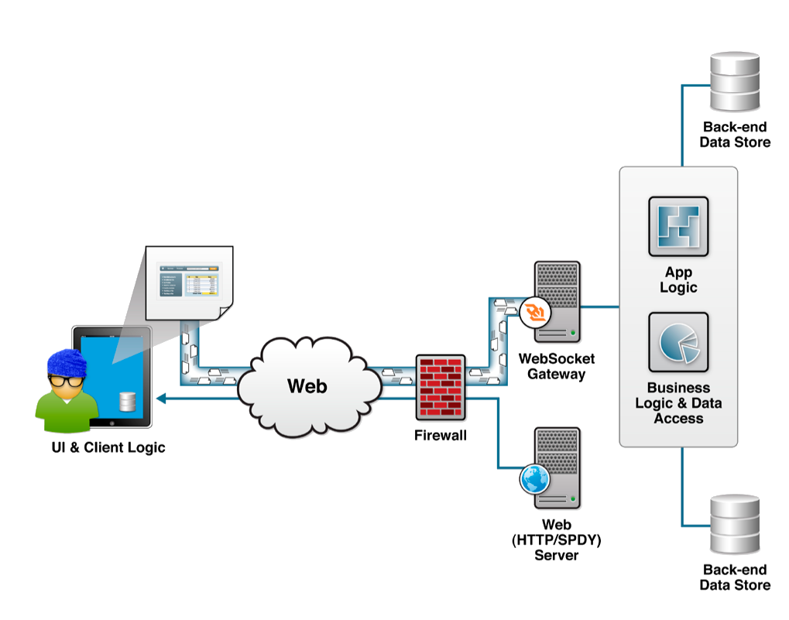
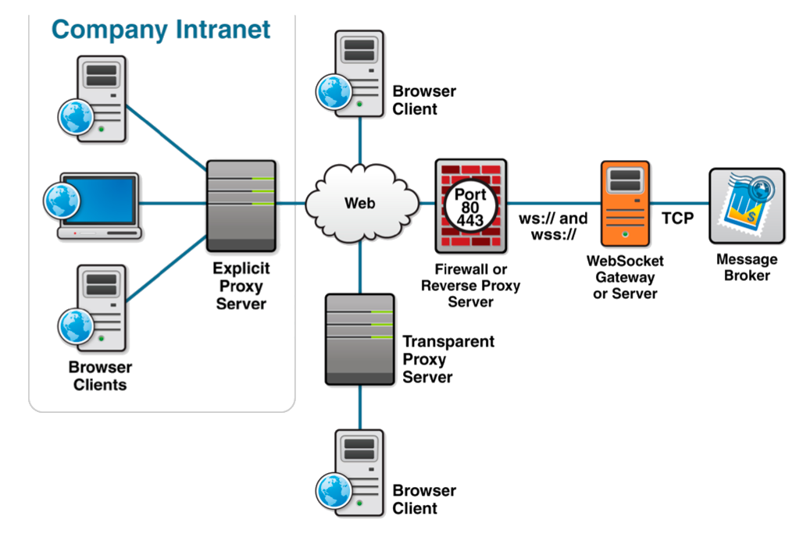

| HTML5 WebSocket Full-duplex, Real-time Web Communication | |
| By: Peter Lubbers |
WHY WEBSOCKET?
Let's take a look at how WebSocket can reduce unnecessary network traffic and latency by comparing HTTP solutions to full-duplex "real time" browser communication with WebSocket.
Normally, when a browser visits a web page, an HTTP request is sent to the web server that hosts that page. The web server acknowledges the request and sends back a response. In many cases-for example, for stock prices, news reports, ticket sales, traffic patterns, and medical device readings-the response may be stale by the time the browser renders the page. If you want to get the most up-to-date real-time information, you can continually refresh the page manually. But that's obviously not much of a solution.
Previous attempts to provide real-time web applications largely revolve around polling, long polling, and other server-side push technologies, commonly referred to as "Comet." Ultimately, all of these methods for providing real-time data involve HTTP request and response headers, which contain lots of additional, unnecessary header data and introduce latency.
On top of that, full-duplex connectivity requires more than just the downstream connection from server to client. In an effort to simulate fullduplex communication over half-duplex HTTP, many of today's solutions use two connections: one for the downstream and one for the upstream. The maintenance and coordination of these two connections introduce significant overhead in terms of resource consumption and add lots of complexity. WebSocket gets you the most up-to-date and real-time information since it is a new transport protocol for web applications that provides a bi-directional stream of data that arrives in order, much like TCP. As with TCP, higher-level protocols can run over WebSocket.
THE WEBSOCKET PROTOCOL
To establish a WebSocket connection, the client and server upgrade from the HTTP protocol to the WebSocket protocol during their initial handshake, as shown in Figure and Listing 1. Note that this connection description represents the latest version of the protocol, as defined in IETF RFC 6455.

Figure 1. WebSocket Upgrade handshake
Listing 1. Example WebSocket Upgrade handshake
From client to server:
GET /chat HTTP/1.1
Host: server.example.com
Upgrade: websocket
Connection: Upgrade
Sec-WebSocket-Key: dGhlIHNhbXBsZSBub25jZQ==
Origin: http://example.com
Sec-WebSocket-Protocol: chat, superchat
Sec-WebSocket-Version: 13
From server to client:
HTTP/1.1 HTTP/1.1 101 Switching Protocols
Upgrade: websocket
Connection: Upgrade
Sec-WebSocket-Accept: s3pPLMBiTxaQ9kYGzz...
After the handshake, the client and server can send messages at any time. The client and the server construct messages according to the WebSocket protocol. The bytes preceding the data payload mark the frame length and type. Text frames are UTF-8 encoded.
The data sent from the browser to the server is masked, which is an unusual feature of the WebSocket protocol. Every byte of payload data is XORed with a random mask to ensure that WebSocket traffic does not look like other protocols. Like the Sec-WebSocket-Key hash, this is meant to mitigate an arcane form of cross-protocol attack against a non-compliant network infrastructure. Figure 2 shows an example of a WebSocket frame.

Figure 2. Components of a WebSocket Frame
Dramatic Reduction in Unnecessary Network Overhead and Latency
Imagine performing a Yahoo! or Google search. As you type in a letter, an Ajax request is fired off to the server for a list of suggested words that start with that letter. An HTTP request may look like the one shown in Listing 2.
Listing 2. HTTP request headers
GET /HTTP/1.1
Host:example.com
User-Agent: Mozilla/5.0 (Macintosh; Intel Mac OS X 10.6; rv:12.0a2) Gecko/20120218 Firefox/12.0a2
Accept: text/html,application/xhtml+xml,application/xml;q=0.9,*/*;q=0.8
Accept-Language: en-us,en;q=0.5
Accept-Encoding: gzip, deflate
Connection: keep-alive
Cookie: __utma=2... (add lots of characters here)
Cache-Control: max-age=0
The server then shoots back a response that looks like this:
Listing 3. HTTP response headers
HTTP/1.1 200 OK
Cache-Control: private, max-age=0
Content-Disposition: attachment
Content-Encoding: gzip
Content-Type: application/json; charset=UTF-8
Date: Wed, 22 Feb 2012 01:06:16 GMT
Expires: -1
Server: gws
x-frame-options: SAMEORIGIN
X-XSS-Protection: 1; mode=block
X-Firefox-Spdy: 1
Just for fun, let's add up all the characters. The total HTTP request and response header information overhead (not even including all the cookie data!) contains 871 bytes-and that's just the overhead. Of course, this is just an example and there could be less than 871 bytes of header data... but we also know that the header data commonly exceeds 2,000 bytes. So, what happens when we deploy an application that makes frequent polling HTTP requests for real-time updates to a large number of users? Let's take a look at the network overhead for just the HTTP request and the response header data associated with this request in three different cases.
Figure 3 compares the dramatic reduction in unnecessary network traffic that is obtained for the polling solution with 1,000, 10,000, and 100,000 concurrently connected clients and compares it to what that would look like with WebSocket instead.

Figure 3. Comparison of unnecessary network overhead between polling and WebSocket traffic
In the bottom half of the figure, you see the reduction in latency provided by the WebSocket solution. Once the connection is upgraded to WebSocket, messages can flow from server to browser the moment they arrive. It still takes 50 ms for messages to travel from server to browser, but the WebSocket connection remains open, so there is no need to send another request to the server.

Figure 4. Comparison between latency of polling and WebSocket applications
WebSocket provides an enormous step forward in the scalability of the real-time web. As we have just shown, WebSocket can provide a 500:1 or-depending on the size of the HTTP headers-even a 1000:1 reduction in unnecessary HTTP header traffic and a 3:1 reduction in latency.
Websocket Servers
All of today's widely used browsers already support WebSocket. For details, see http://caniuse.com. To create a successful WebSocket connection, however, you need a WebSocket-enabled server. Fortunately, there are already lots of WebSocket server implementations out there and even more under development. The following are just a few of the existing WebSocket servers.
- Alchemy-Websockets (.NET)- http://alchemywebsockets.net/
- Apache ActiveMQ (Java)- http://activemq.apache.org/
- Apache-websocket (Apache module)- https://github.com/ disconnect/apache-websocket#readme
- APE Project (C)- http://www.ape-project.org/
- Autobahn (virtual appliance)
- - http://autobahn.ws/
- Caucho Resin (Java)- http://www.caucho.com/
- Cowboy- https://github.com/extend/cowboy
- Cramp (Ruby)- http://cramp.in/
- Diffusion (Commercial product)- http://www.pushtechnology.com/ home
- EM-WebSocket (Ruby)- https://github.com/igrigorik/em-websocket
- Extendible Web Socket Server (PHP)- https://github.com/wkjagt/ Extendible-Web-Socket-Server
- Gevent-websocket (Python)- http://www.gelens.org/code/geventwebsocket/
- GlassFish (Java)- http://glassfish.java.net/
- Goliath (Ruby)- https://github.com/postrank-labs/goliath
- Jetty (Java)- http://jetty.codehaus.org/jetty/
- jWebsocket (Java)- http://jwebsocket.org/
- Kaazing WebSocket Gateway (Commercial product and cloud service)- http://kaazing.com/
- libwebsockets (C)- http://git.warmcat.com/cgi-bin/cgit/ libwebsockets/
- Misultin (Erlang)- https://github.com/ostinelli/misultin
- net.websocket (Go)- code.google.com/p/go.net/websocket
- Netty (Java)- http://netty.io/
- Nugget (.NET)- http://nugget.codeplex.com/
- Orbited (Python)- http://labs.gameclosure.com/orbited2
- phpdaemon (PHP)- http://phpdaemon.net/
- Pusher (commercial cloud service)- http://pusher.com/
- pywebsockets (Python)- http://code.google.com/p/pywebsocket/
- RabbitMQ (Erlang)- https://github.com/videlalvaro/rabbitmqwebsockets
- Socket.io (Node.js)- http://socket.io/
- SockJS-node (Node)- https://github.com/sockjs/sockjs-node
- SuperWebSocket (.NET)- http://superwebsocket.codeplex.com/
- Tomcat (Java)- http://tomcat.apache.org/
- Tornado (python)- http://www.tornadoweb.org/
- txWebSocket (Python/Twisted)- https://github.com/rlotun/ txWebSocket
- vert.x (Java)- http://vertx.io/
- Watersprout (PHP)- http://spoutserver.com/
- web-socket-ruby (Ruby)- https://github.com/gimite/web-socketruby
- Webbit (Java)- https://github.com/webbit/webbit
- WebSocket-Node (Node.js)- https://github.com/Worlize/ WebSocket-Node
- websockify (Python)- https://github.com/kanaka/websockify
- XSockets (.NET)- http://xsockets.net/
- Yaws (Erlang)- http://yaws.hyber.org/websockets.yaws
USING THE WEBSOCKET API
Checking for Browser Support
Before you use the WebSocket API, you need to make sure that the browser supports it. This way, you can provide a message, prompting the users of your application to upgrade to a more up-to-date browser. You can use the following code to test for browser support:
Listing 4. Checking for browser support
if (window.WebSocket)
{
alert("WebSocket is supported");
}
else
{
alert("WebSocket is not supported");
}
Date: Wed, 22 Feb 2012 01:06:16 GMT
Expires: -1
Server: gws
x-frame-options: SAMEORIGIN
X-XSS-Protection: 1; mode=block
X-Firefox-Spdy: 1
Listing 4 shows how a call to window.WebSocket returns the WebSocket object if it exists or triggers a failure case if it does not. Figure 5 shows the resulting message in Microsoft Internet Explorer 10, which does support Webocket.

Figure 5. Resulting message in Microsoft Internet Explorer
Another way to see if your browser supports WebSocket is to use the browser's developer tools. Figure 5 shows how you can use the WebSocket API from the debug console. You can also test to see if WebSocket is supported there. If it is not, the window.WebSocket command returns "undefined."

Figure 6. WebSocket connectivity in Chrome Developer Tools' Network panel
In Google Chrome, you can also navigate to chrome://netinternals/#sockets to get fine-grained information about all socket connections as shown in Figure 6.

Figure 7. Socket internals page chrome://net-internals/#sockets
Creating a WebSocket object and Connecting to a WebSocket Server
Using the WebSocket interface is quite straightforward. To connect to an endpoint, just create a new WebSocket instance, providing the new object with a URL that represents the endpoint to which you wish to connect. You can use the ws:// and wss:// prefixes to indicate a WebSocket and a WebSocket Secure connection, respectively.
url = "ws://localhost:8080/echo";
w = new WebSocket(url)
When you make a WebSocket connection, you have the option of listing the protocols your application can speak. The second argument to the WebSocket constructor can be a string or array of strings with the names of the subprotocols that your application understands and wishes to use to communicate.
w = new WebSocket(url, protocol);
You can even list several protocols:
w = new WebSocket(url, ["proto1", "proto2"]);
Hypothetically, proto1 and proto2 are well defined protocol names that both the client and server can understand; they may even be registered and standardized. The server will select a prefered protocol from the list. When the socket opens, its protocol property will contain the protocol that the server chooses.
onopen = function(e)
{
// determine which protocol the server selected
log(e.target.protocol)
}
Content-Type: application/json; charset=UTF-8
Date: Wed, 22 Feb 2012 01:06:16 GMT
Expires: -1
Server: gws
x-frame-options: SAMEORIGIN
X-XSS-Protection: 1; mode=block
X-Firefox-Spdy: 1
Adding Event Listeners
WebSocket programming follows an asynchronous programming model; once you have an open socket, you simply wait for events. You don't have to actively poll the server anymore. You add callback functions to the WebSocket object in order to listen for events.
A WebSocket object dispatches four events: open, message, close, and error. The open event fires when a connection is established, the message event when messages are received, the close event when the WebSocket connection is closed, and the error event when an error occurs. The error event fires in response to unexpected failure. As in most JavaScript APIs, there are corresponding callbacks (onopen, onmessage, onclose, and onerror) that are called when events are dispatched.
w.onopen = function()
{
console.log("open");
w.send("Connection open");
}
w.onmessage = function(e)
{
console.log(e.data);
}
w.onclose = function(e)
{
console.log("closed");
}
w.onerror = function(e)
{
console.log("error");
}
Let's take another look at this message handler. The data attribute on the message event is a string if the WebSocket protocol message was encoded as text. For binary messages, data can be either a Blob or an ArrayBuffer, depending on the value of the WebSocket's binaryType property.
w.binaryType = "arraybuffer";
w.onmessage = function(e)
{
// data can now be either a string or an ArrayBuffer
console.log(e.data);
}
Date: Wed, 22 Feb 2012 01:06:16 GMT
Expires: -1
Server: gws
x-frame-options: SAMEORIGIN
X-XSS-Protection: 1; mode=block
X-Firefox-Spdy: 1
Sending Messages
While the socket is open (that is, after the onopen listener is called and efore the onclose listener is called), you can use the send function to send messages. After sending one or more messages, you can also call close to terminate the connection or you can leave the connection open.
document.getElementById("sendButton").onclick = function()
{
w.send(document.getElementById("inputMessage").value);
}
Content-Encoding: gzip
Content-Type: application/json; charset=UTF-8
Date: Wed, 22 Feb 2012 01:06:16 GMT
Expires: -1
Server: gws
x-frame-options: SAMEORIGIN
X-XSS-Protection: 1; mode=block
X-Firefox-Spdy: 1
In more advanced uses of WebSocket, you may want to measure how much data is backed up in the outgoing buffer before calling send( ). The bufferedAmount attribute represents the number of bytes that have been sent on the WebSocket that have not yet been written onto the network. This could be useful for throttling the rate at which the application sends data.
document.getElementById("sendButton").onclick = function()
{
if (w.bufferedAmount < bufferThreshold)
{
w.send(document.getElementById("inputMessage").value);
}
}
In addition to strings, WebSocket can also send binary data. This is especially useful when you want to implement binary protocols, such as the standard Internet protocols that are typically layered on top of TCP. The WebSocket API supports the sending of Blob and ArrayBuffer instances as binary data.
var a = new Uint8Array([8,6,7,5,3,0,9]);
w.send(a.buffer);
A NEW CLASS OF WEB APPLICATIONS
Now that you have a socket connection in your browser, you can do lots of things that were not previously possible in a browser. In fact, the first line in the WebSocket API specification defines WebSocket as an "API that enables Web pages to use the WebSocket protocol for twoway communication with a remote host". Combine the powerful socket connectivity over standard web ports with other HTML5 features such as canvas and SVG for visualization of the WebSocket data, local storage, and offline capabilities, and you can create web applications that are on par with desktop applications with the added benefit that they don't have to open non-standard ports to communicate to a backend server.
A common approach is to use some JSON format over WebSocket. But once you start writing your own syntax for how traffic should flow over the wire, you should consider using existing protocols. For example, you may want to use include Extensible Messaging and Presence Protocol (XMPP or Jabber), Advanced Message Queuing Protocol (AMQP), Remote Frame Buffer (RFB, or VNC), and Streaming Text Oriented Messaging Protocol (STOMP).
These are real-world protocols that are in use by many desktop clients and servers. Using a standard protocol ensures that there is interoperability between web applications and servers from different organizations (protocols are programming-language agnostic). It also opens the door for public WebSocket services. You can speak to a server using a known protocol. Client applications that understand the same protocol can then connect and participate. There are already quite a few WebSocketbased protocol implementations available, and we expect to see many more over time. Some examples are stomp-websocket, a JavaScript implementation of STOMP (http://jmesnil.net/stomp-websocket/doc/) and a proposed draft of XMPP over WebSocket (http://tools.ietf.org/html/ draft-moffitt-xmpp-over-websocket-00).
Traditional web pages, shown in Figure 8, are usually assembled on the server side and pushed out as static, stateless content to the client. Conversely, modern web apps, shown in Figure 9, can behave more like client-server applications in which the browser first requests the static resources for the web page from an HTTP server (or a network edge caching server), then makes stateful WebSocket-based backend connections.

Figure 8. Traditional web apps generated server-side available for the viewer

Figure 9. HTML5 client-side generated web app
Architectures like this are often achieved by using some sort of higherlevel protocol, which in turn enable HTML5 web apps to rapidly become first class network citizens.
WEBSOCKET IN THE REAL WORLD
What happens with WebSocket connectivity in the real world-when you move away from localhost tests and proof of concepts? This section will cover what happens when a WebSocket connection traverses intermediaries on the network and what can be done to make WebSocket work in older browsers.
Transparent Proxy Servers
Real-world WebSocket traffic will flow through proxy servers. Figure 10 shows a simplified network topology in which clients use a browser to access back-end TCP-based services using a full-duplex HTML5 WebSocket connection. Some clients are located inside a corporate network that's protected by a corporate firewall and configured to access the Internet through explicit or known proxy servers, which may also provide content caching and security. Other clients access the WebSocket server directly over the Internet. In both cases, the client requests may be routed through transparent, or unknown, proxy servers (for example, a proxy server in a data center or a reverse proxy server in front of the remote server). It is even possible for proxy servers to have their own explicit proxy servers, which increases the number of hops the WebSocket traffic has to make.

Figure 10. WebSocket architecture with explicit and transparent proxy servers
If a browser is configured to use an explicit proxy server, it will first issue the HTTP CONNECT method to that proxy server while establishing the WebSocket connection. For example, to connect to the server example. com using the ws:// scheme (typically over port 80), the browser client sends the HTTP CONNECT method to the proxy server as follows:
CONNECT example.com:80 HTTP/1.1
Host: example.com
When the explicit proxy server allows the CONNECT method, the WebSocket connection upgrade handshake can be made. When that handshake succeeds, WebSocket traffic can begin to flow unimpeded through the proxy server.
In the case that the unencrypted WebSocket traffic flows through a transparent proxy on its way to the WebSocket server, the connection is likely to fail in practice since the browser will not issue the CONNECT method. When a proxy server forwards a request to the (WebSocket) server, it is expected to strip off certain headers, including the Connection header. Therefore, a well behaved transparent proxy server will cause the WebSocket upgrade handshake to fail almost immediately.
Not all proxy servers conform to the HTTP standard in terms of expected proxy behavior. For example, some proxy servers are configured such that they do not remove the Connection: Upgrade header ; instead, they pass it on to the WebSocket server, which in turn sends the 101 Switching Protocols response. Problems then arise when the client or the server begins sending the first WebSocket frame. Since the frame does not resemble anything the proxy server might expect (such as regular HTTP traffic), some form of rejection or hiccup will likely occur unless the proxy server is specifically configured to handle WebSocket traffic.
Fortunately, there is a solution to this problem. You can use WebSocket Secure (wss:// scheme), which will first establish an end-to-end encrypted tunnel. With the wire traffic now encrypted, intermediate transparent proxy servers will simply allow the encrypted traffic through, so there is every likelihood that the WebSocket connection will succeed. Therefore, it is always best to use WebSocket Secure using TLS (a.k.a. SSL) encryption to connect to a WebSocket server unless you're absolutely certain there are no intermediaries. While TLS encryption has the added benefit of being more secure, it does increase CPU consumption for both the client and the server, though usually not to a dramatic degree. With hardware TLS acceleration, you can reduce CPU consumption to near zero on the server side.
What about browsers that do not support websocket?
WebSocket is now supported by all of today's widely used browsers, but what if you have to support an old version of Internet Explorer or a version of a mobile browser that does not support WebSocket? There is good news here. There are quite a few polyfills (libraries that emulate the WebSocket API in browsers that do not have native support). Here are a few of these polyfills:
- Kaazing WebSocket Gateway-pure JavaScript polyfill as far back as I.E. 6
- Socket.IO-works with Node.js
- WebSocket.JS-Flash based library (Note: using Flash-based emulation for encrypted WebSocket requires opening an extra port for the policy file, and Flash has some known proxy poisoning-attack issues)
Additional Resources
- WebSocket API (W3C):http://dev.w3.org/html5/websockets/
- WebSocket Protocol (IETF):http://tools.ietf.org/html/rfc6455
- WebSocket test server:http://www.websocket.org
- How HTML5 WebSockets Interact with Proxy Servers:http:// www.infoq.com/articles/Web-Sockets-Proxy-Servers